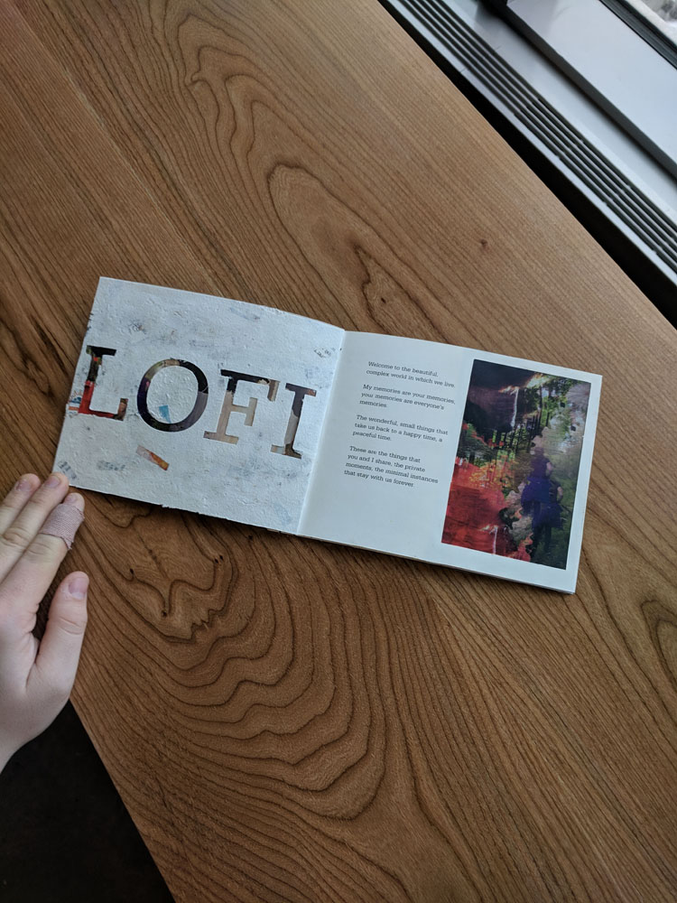
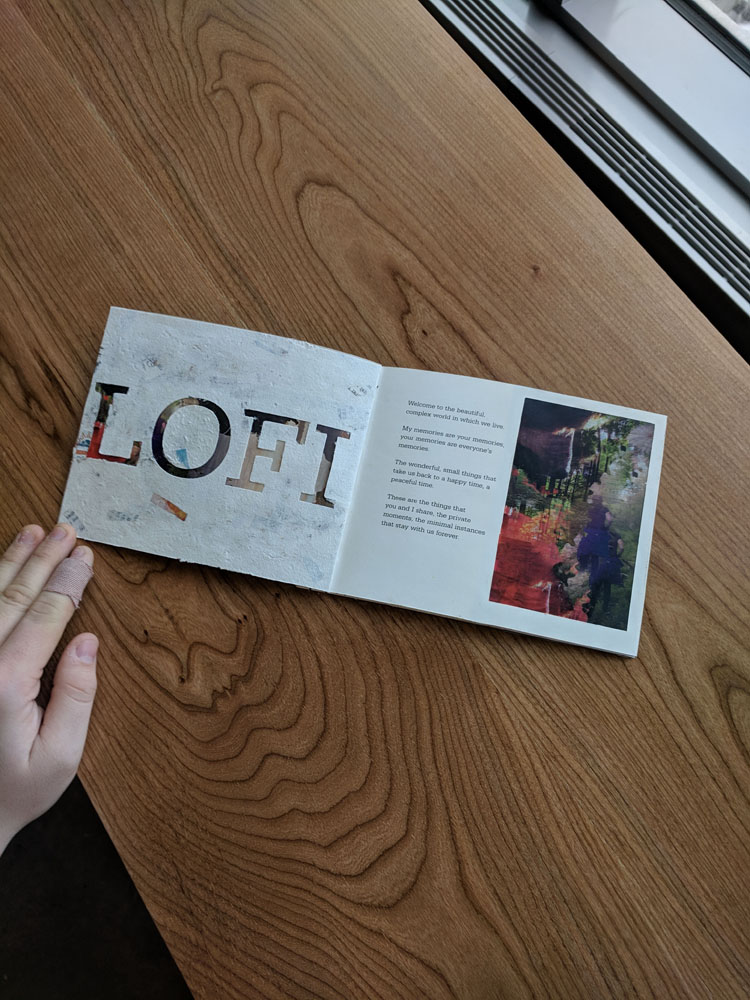

Lofidelitism is a fabricated artistic movement which was originally meant to represent a set of visual aesthetics and feelings present in lo-fi music. The project quickly expanded to explore the nature of memory and nostalgia, begging the question "what does a memory look like?".
Art of this nature aims to undermine the pompous art world by creating accessible and understandable art, that simply pleases the viewer, calms them, and helps them reach a happy place. The visuals avoid sharp and clear subjects in favour of highlighting recognizable symbols that anyone can connect to.
I aimed to design a book who's physical characteristics were defined by the tenets of Lofidelitism. Riding somewhere between a family photo album & a slick art catalogue. The images are made entirely from personal collections of my own photos, and are mashed together in groups to either evoke a certain mood, or act as a reminder of certain universal experiences. I aimed to create images that mimic how someone recalls a memory: unlike a film, but in a tactile sense, with strong elements and colours repeated, but lacking specific subjects.
I played on the concept of a "light memory" by printing the images on vellum allowed light to pass through the book, and fostered dialogues between collages depending on the level of light in the room. Construction was challenging, but very rewarding in the end.


 
